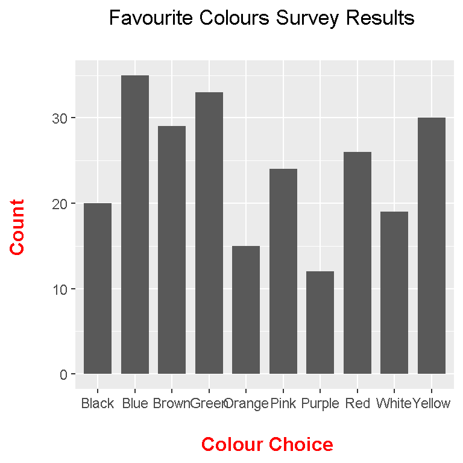
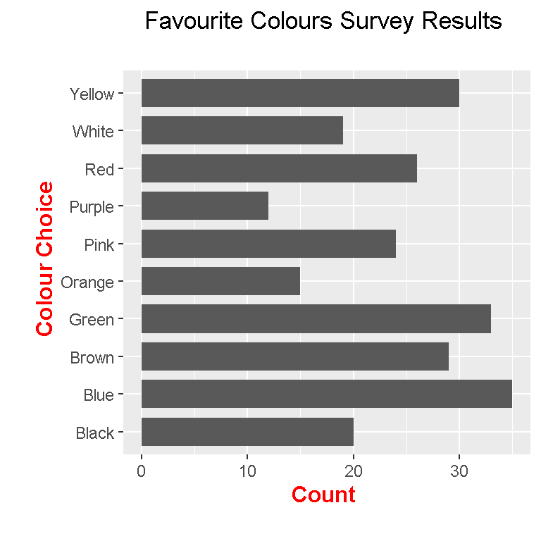
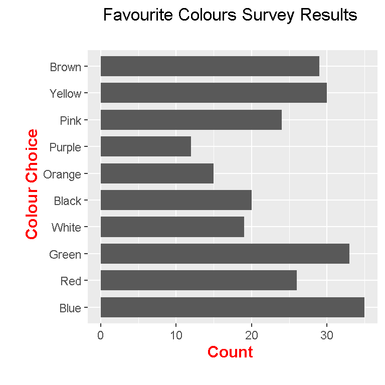
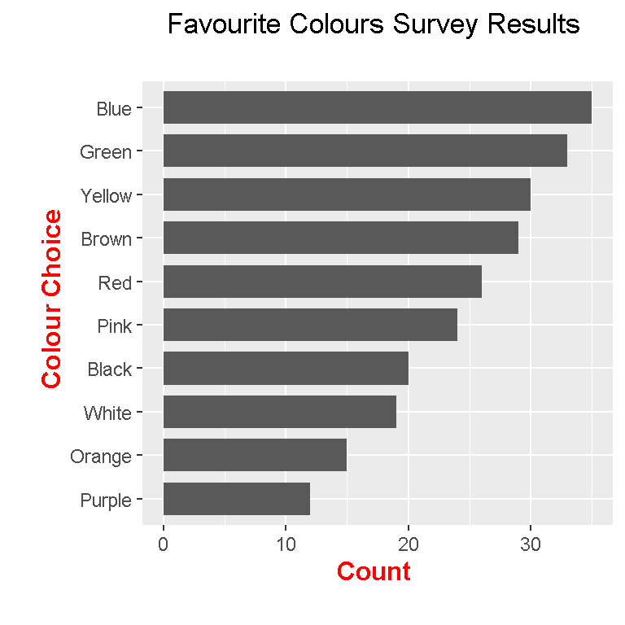

Hi. I have been playing around R’s ggplot2 data visualization package and I have learned how to do sideways bar graphs.
I will illustrate how to create a sideways bar graph using made up survey data. This data will be based on people’s favourite colours.
# Load packages:
library(ggplot2)
# Favourite Colour Survey (Made-Up/Fake Data):
colour_choices <- c("Blue", "Red", "Green", "White", "Black", "Orange",
"Purple", "Pink", "Yellow", "Brown")
colour_counts <- c(35, 26, 33, 19, 20, 15, 12, 24, 30, 29)
colour_table <- data.frame(colour_choices, colour_counts)
# Preview table:
colour_table## colour_choices colour_counts
## 1 Blue 35
## 2 Red 26
## 3 Green 33
## 4 White 19
## 5 Black 20
## 6 Orange 15
## 7 Purple 12
## 8 Pink 24
## 9 Yellow 30
## 10 Brown 29
The next lines of code consist of check the structure of the data, renaming the column names and computing the total number of people in the survey.
# Check data structure:
str(colour_table)## 'data.frame': 10 obs. of 2 variables:
## $ colour_choices: Factor w/ 10 levels "Black","Blue",..: 2 8 4 9 1 5 7 6 10 3
## $ colour_counts : num 35 26 33 19 20 15 12 24 30 29# Rename columns:
colnames(colour_table) <- c("Colour", "Count")
# Total Number in Survey:
(total_num <- sum(colour_table[, 2]))## [1] 243
The code for a regular (vertical) bar graph in R using ggplot2 would look like this.
## ggplot bar Graph:
ggplot(data = colour_table, aes(x = Colour, y = Count)) +
geom_bar(stat = "identity", width = 0.75) +
labs(x = "\n Colour Choice", y = "Count \n", title = "Favourite Colours Survey Results \n") +
theme(plot.title = element_text(hjust = 0.5),
axis.title.x = element_text(face="bold", colour="red", size = 12),
axis.title.y = element_text(face="bold", colour="red", size = 12))
To convert the above bar graph into a sideways one, just simply add coord_flip() after ggplot().
## Sideways Bar Graph (Add coord_flip())
ggplot(data = colour_table, aes(x = Colour, y = Count)) +
geom_bar(stat = "identity", width = 0.75) +
coord_flip() +
labs(x = "\n Colour Choice", y = "Count \n", title = "Favourite Colours Survey Results \n") +
theme(plot.title = element_text(hjust = 0.5),
axis.title.x = element_text(face="bold", colour="red", size = 12),
axis.title.y = element_text(face="bold", colour="red", size = 12))
Notice that from bottom to top the colours are in ABC order. This is different than what we had earlier with what we had with colour_choices().
colour_choices <- c("Blue", "Red", "Green", "White", "Black", "Orange",
"Purple", "Pink", "Yellow", "Brown")
We can retain the colour choices order we want with a minor fix. This fix can be done on the first column by convert the first column as a factor but with setting the vector colour_choices in the levels argument of factor().
## Colours are in ABC order, not in order as defined in the beginning. Some fixes needed.
# Fix first column:
colour_table$Colour <- factor(colour_table$Colour, levels = colour_choices)
The resulting sideways bar graph code is similar to the previous one. The resulting sideways bar graph will be different on the vertical axes with the colour choices.
ggplot(data = colour_table, aes(x = Colour, y = Count)) +
geom_bar(stat = "identity", width = 0.75) +
coord_flip() +
labs(x = "\n Colour Choice", y = "Count \n", title = "Favourite Colours Survey Results \n") +
theme(plot.title = element_text(hjust = 0.5),
axis.title.x = element_text(face="bold", colour="red", size = 12),
axis.title.y = element_text(face="bold", colour="red", size = 12))
If we want to sort our bars from largest to smallest, we need to reorganize the factors in a specific way.
## Sorting the colours from most popular to least popular sideways bar graph:
# We fix it by using the factor function again but with a modification.
# Reference: http://rstudio-pubs-static.s3.amazonaws.com/7433_4537ea5073dc4162950abb715f513469.html
# order(colour_table$Count) puts the row numbers from smallest to largest:
colour_table$Colour <- factor(colour_table$Colour,
levels = colour_table$Colour[order(colour_table$Count)])
The order(colour_table$Count) part outputs the positions of the Count column in colour_table from largest to smallest. Then colour_table$Colour[order(colour_table$Count)] outputs the colours with the largest counts first to the less frequent colour.
Here is the code for the sorted sideways bar graph with the output.
ggplot(data = colour_table, aes(x = Colour, y = Count)) +
geom_bar(stat = "identity", width = 0.75) +
coord_flip() +
labs(x = "\n Colour Choice", y = "Count \n", title = "Favourite Colours Survey Results \n") +
theme(plot.title = element_text(hjust = 0.5),
axis.title.x = element_text(face="bold", colour="red", size = 12),
axis.title.y = element_text(face="bold", colour="red", size = 12))
To make the bar graphs a bit more informative, labels can be added. The geom_text() function after ggplot() enables labels.
## Adding labels (Add geom_text()):
ggplot(data = colour_table, aes(x = Colour, y = Count)) +
geom_bar(stat = "identity", width = 0.75) +
coord_flip() +
geom_text(aes(label = Count), hjust = 1.2, colour = "white", fontface = "bold") +
labs(x = "\n Colour Choice \n", y = "\n Count \n", title = "\n Favourite Colours Survey Results \n") +
theme(plot.title = element_text(hjust = 0.5, size = 15),
axis.title.x = element_text(face="bold", colour="red", size = 12),
axis.title.y = element_text(face="bold", colour="red", size = 12))